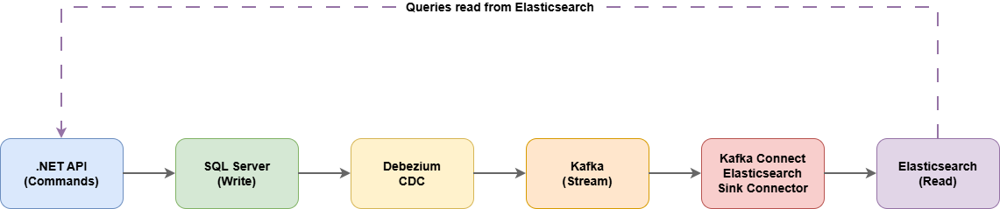
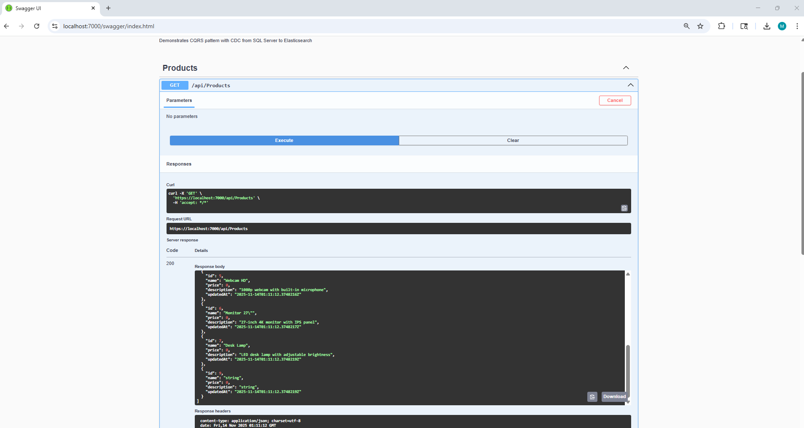
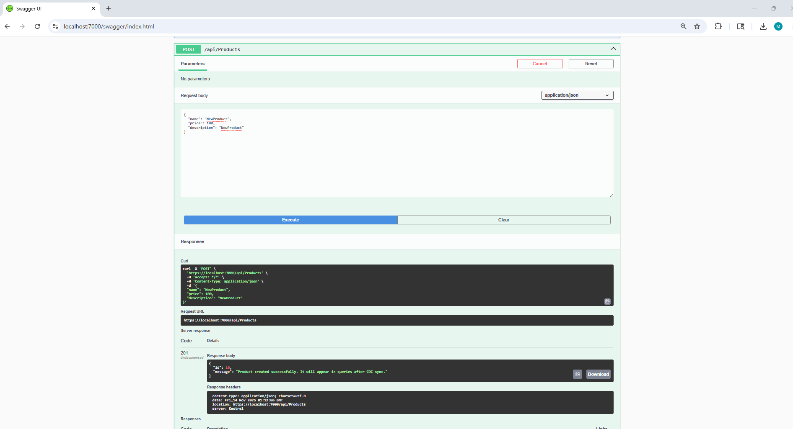
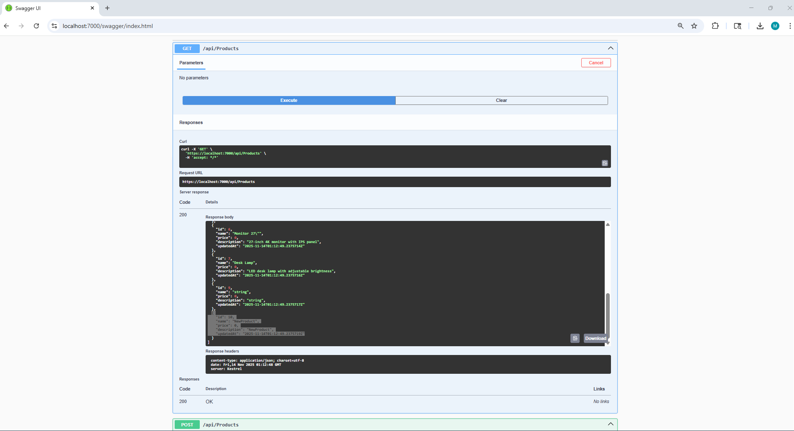

Infrastructure-Level Architecture with CDC and Event Streaming
Achieve true read/write separation using Change Data Capture (CDC), Debezium, Kafka, and Elasticsearch. A .NET demonstration of infrastructure-level CQRS that enables independent scaling without application-level event publishing.
This repository demonstrates how to implement Command Query Responsibility Segregation (CQRS) at the infrastructure level using Change Data Capture (CDC) and event streaming. Unlike traditional CQRS implementations that only separate commands and queries in code, this approach achieves physical separation at the database layer.
Core Technologies:

The architecture achieves read/write separation through an automated pipeline:
This demonstrates eventual consistency: changes written to SQL Server appear in Elasticsearch within small delay through the CDC pipeline, without requiring application code modifications.
Complete separation of read and write models. Commands write to SQL Server, queries read from Elasticsearch - each optimized for its purpose.
Database-level change capture eliminates the need for application-level event publishing. All database modifications are captured automatically, including direct SQL operations.
Changes flow through Kafka as a durable, scalable event stream, enabling reliable data replication and downstream processing.
Acceptable delay between write and read operations enables independent optimization and scaling.
Traditional CQRS Limitations:
Infrastructure-Level CQRS Benefits:
Get the complete stack running in minutes:
# 1. Start all infrastructure services
docker-compose up -d
# 2. Run the .NET API
cd src/CdcCqrsDemo.Api
dotnet run
Access Points:
See the full README for detailed setup instructions and architecture documentation.
The repository includes screenshots demonstrating the CDC pipeline:
Step 1: Initial State

Step 2: Create Product

Step 3: Verify CDC Sync

This demonstrates eventual consistency: the product is written to SQL Server immediately, then appears in Elasticsearch after the CDC pipeline processes the change.
Note: While this demonstration uses SQL Server, the architecture supports any database with CDC capabilities (PostgreSQL, MySQL, MongoDB, Oracle).
This repository uses Docker Compose for demonstration purposes only. Production deployments require:
See the README for detailed production considerations.
Blog Post: Moving CQRS Beyond the Database: System Design with Debezium, Kafka, and Elasticsearch
Application Architecture Template: CleanArchitecture-DDD-CQRS - This project uses NuGet packages from this repository for CQRS abstractions, DDD patterns, and repository interfaces.
GitHub: View Repository
The repository includes:
This architecture is appropriate when:
For smaller systems with straightforward queries, the additional infrastructure may not justify the complexity. But for large, data-intensive applications, this approach transforms CQRS from a code pattern into a real architectural boundary.
CQRS was never meant to be a naming convention—it was meant to decouple read and write concerns in both design and infrastructure.
Using Debezium and Kafka to replicate data changes from a transactional database into Elasticsearch provides that separation in a practical, maintainable way for .NET systems.
This is a demonstration project for educational and design exploration purposes.